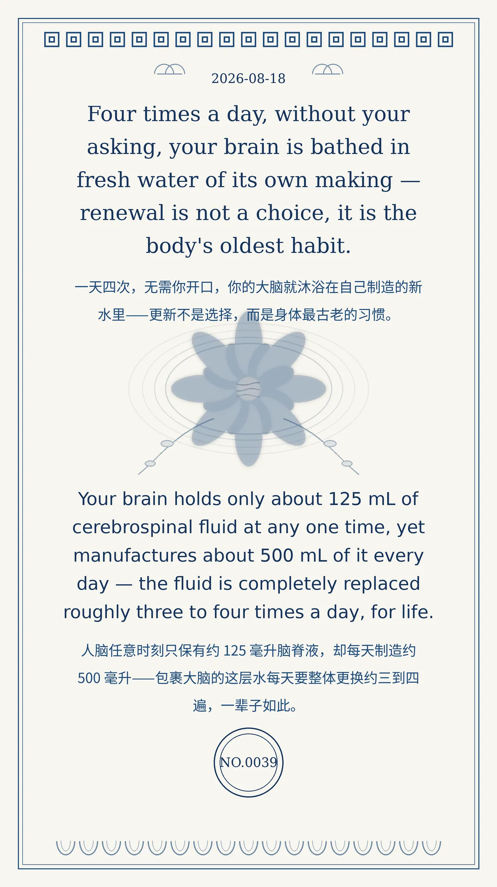

Four times a day, without your asking, your brain is bathed in fresh water of its own making — renewal is not a choice, it is the body's oldest habit.
Your brain holds only about 125 mL of cerebrospinal fluid at any one time, yet manufactures about 500 mL of it every day — the fluid is completely replaced roughly three to four times a day, for life. （人脑任意时刻只保有约 125 毫升脑脊液，却每天制造约 500 毫升——包裹大脑的这层水每天要整体更换约三到四遍，一辈子如此。）
efe6fb5a8a5d5505冷知识由执笔的模型自行查证。逐条断言、来源与所引原句存档在纯文字副本里，未经程序逐字校验，留作事后核实。